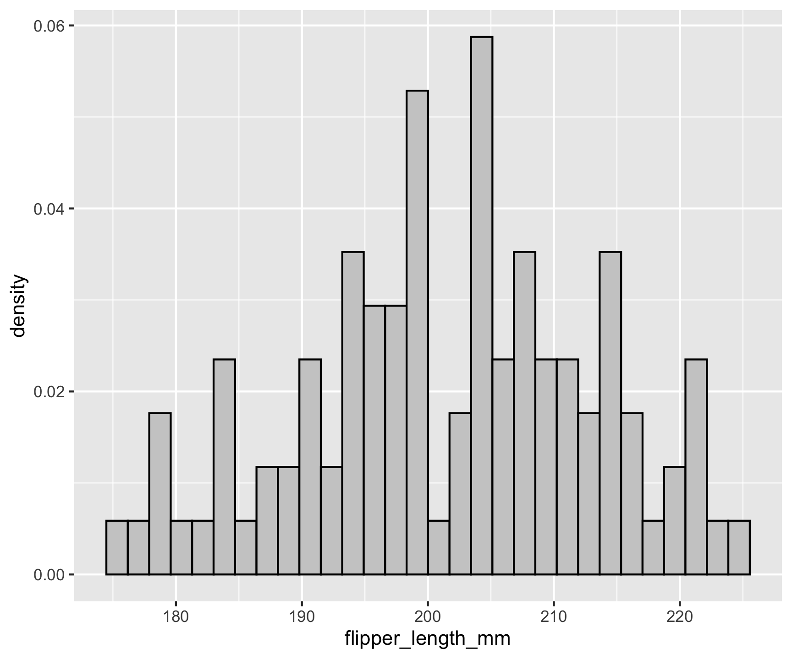
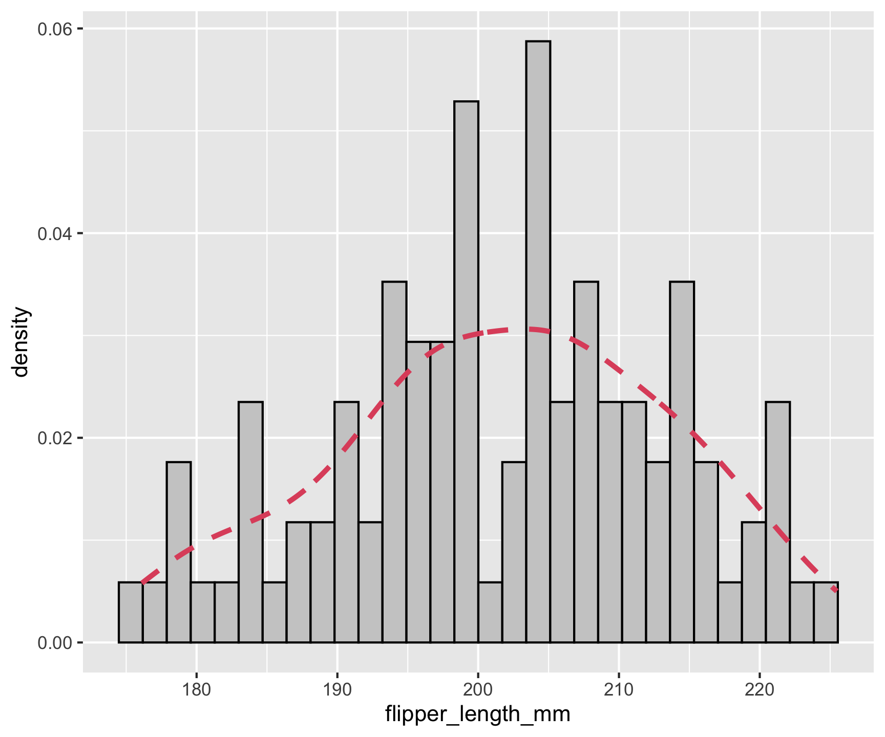
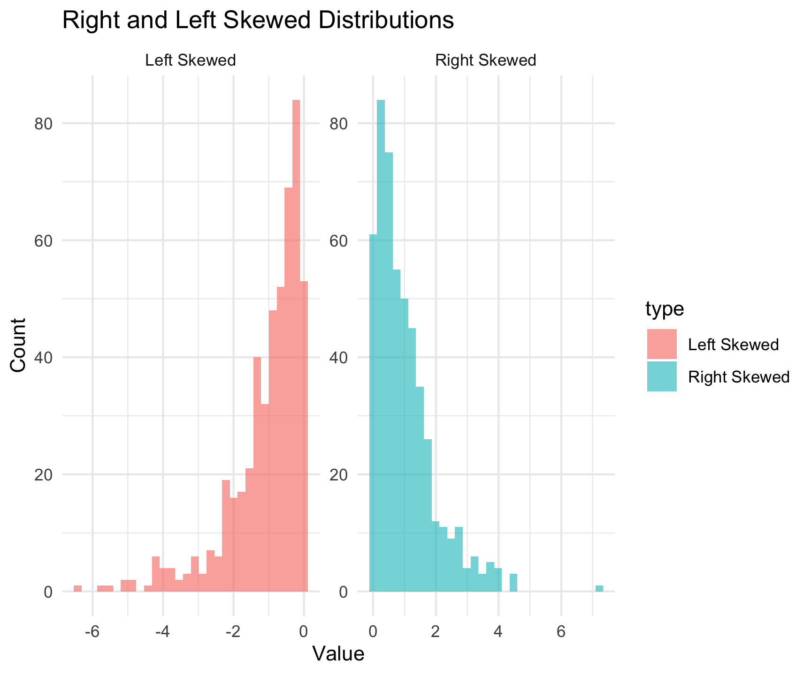

# list of lists ...
(list_list <- list(list("hi")))
[[1]]
[[1]][[1]]
[1] "hi"
str(list_list)
List of 1
$ :List of 1
..$ : chr "hi"Lecture 09
Nests, maps, and models
So far!
We have learned about the
data.frame/tibblestructure and how is is built on top ofliststructures in R.Remember that
listscan be recursive?
Last Assignment
- We created a
data.framedocumenting the name/abbrivation/region relationship of US states - In each case, the column was defined by a
characteratomic vector
df <- data.frame(region = state.region,
state_abbr = state.abb,
state.name = state.name)
head(df)
region state_abbr state.name
1 South AL Alabama
2 West AK Alaska
3 West AZ Arizona
4 South AR Arkansas
5 West CA California
6 West CO ColoradoRemember … Vectors?
- Vectors come in two types: atomic and lists
- For atomic vectors, all elements must have the same type;
- For lists, elements can have different types.
NULLserves as a generic zero length vector.- This diagram - taken from here - illustrates the basic relationships:

. . .
df$list_element = vector("list", length = nrow(df))
head(df)
region state_abbr state.name list_element
1 South AL Alabama NULL
2 West AK Alaska NULL
3 West AZ Arizona NULL
4 South AR Arkansas NULL
5 West CA California NULL
6 West CO Colorado NULLWhile atomic vecotrs must store base R data types (Logical, character, numeric)

lists can store whatever they want!
Now, remember Groups?
- Groups extend the
data.framestructure by ADDING more attributes to the object This is simualr to how a matrix or array extends the attomic vector structure by adding more attributes (e.g.dim())
gm2007 <- gapminder |>
select(continent, year, lifeExp, gdpPercap) |>
filter(year == 2007)
grouped_data = group_by(gm2007, continent)
attributes(grouped_data)$groups
# A tibble: 5 × 2
continent .rows
<fct> <list<int>>
1 Africa [52]
2 Americas [25]
3 Asia [33]
4 Europe [30]
5 Oceania [2]
group_vars(grouped_data) # Shows the grouping variables
[1] "continent"
groups(grouped_data) # Shows the full grouping structure
[[1]]
continent
group_size(grouped_data) # Shows number of observations per group
[1] 52 25 33 30 2
group_keys(grouped_data) # Shows the keys used to group the data
# A tibble: 5 × 1
continent
<fct>
1 Africa
2 Americas
3 Asia
4 Europe
5 Oceania
group_indices(grouped_data) # Shows the divison
[1] 3 4 1 1 2 5 4 3 3 4 1 2 4 1 2 4 1 1 3 1 2 1 1 2 3 2 1 1 1 2 1 4 2 4 4 1 2
[38] 2 1 2 1 1 1 4 4 1 1 4 1 4 2 1 1 2 2 3 4 4 3 3 3 3 4 3 4 2 3 3 1 3 3 3 3 1
[75] 1 1 1 1 3 1 1 1 2 3 4 1 1 3 1 3 4 5 2 1 1 4 3 3 2 2 2 3 4 4 2 1 4 1 1 3 1
[112] 4 1 3 4 4 1 1 4 3 1 1 4 4 3 3 1 3 1 2 1 4 1 4 2 2 2 3 3 3 1 1Remember that dplyr verbs respect groups
# Full data.set
gm2007 |>
summarise(n = n(), mean_lifeExp = mean(lifeExp), mean_gdpPercap = mean(gdpPercap))
# A tibble: 1 × 3
n mean_lifeExp mean_gdpPercap
<int> <dbl> <dbl>
1 142 67.0 11680.
# Iterate by groups ...
grouped_data |>
summarise(n = n(), mean_lifeExp = mean(lifeExp), mean_gdpPercap = mean(gdpPercap))
# A tibble: 5 × 4
continent n mean_lifeExp mean_gdpPercap
<fct> <int> <dbl> <dbl>
1 Africa 52 54.8 3089.
2 Americas 25 73.6 11003.
3 Asia 33 70.7 12473.
4 Europe 30 77.6 25054.
5 Oceania 2 80.7 29810.It does this by using the group_indices as internal filter objects! (e.g. do X for group 1, then 2, then 3, …)
long_list = list()
for(i in unlist(group_keys(grouped_data))){
long_list[[i]] <- dplyr::filter(gm2007, continent == i) |>
summarise(continent = continent[1], n = n(), mean_lifeExp = mean(lifeExp), mean_gdpPercap = mean(gdpPercap))
}
bind_rows(long_list)
# A tibble: 5 × 4
continent n mean_lifeExp mean_gdpPercap
<fct> <int> <dbl> <dbl>
1 Africa 52 54.8 3089.
2 Americas 25 73.6 11003.
3 Asia 33 70.7 12473.
4 Europe 30 77.6 25054.
5 Oceania 2 80.7 29810.Today
- Linear Models: Introduction to Models in R
- Deep Dive on OLS in a few weels
- Understanding the
nest/mapapproach of
Linear Models (lm) in R
What is it?
A Linear Model is a statistical method for modeling relationships between a dependent variable and one or more independent variables.
Commonly used in regression analysis.
They are useful becasue they are simple and interpretable.
Useful for prediction and understanding relationships in data.
Forms the foundation for more complex models.
Much more detail in our modeling weeks
The lm() Function in R
Basic Syntax:
model <- lm(y ~ x, data = dataset)Where:
y: Dependent variable (response).~: Describes a formula as LHS ~ RHS (rememberfacet_*)x: Independent variable (predictor).dataset:data.framecontaining variables.
Example:
gm2007 <- filter(gapminder, year == 2007)
lm_model <- lm(lifeExp ~ gdpPercap, data = gm2007). . .
lm_model
Call:
lm(formula = lifeExp ~ gdpPercap, data = gm2007)
Coefficients:
(Intercept) gdpPercap
5.957e+01 6.371e-04 Multiple Linear Regression
Syntax for Multiple Predictors:
lm_model <- lm(y ~ x1 + x2 + x3, data = dataset). . .
Allows for multiple independent variables.
lm_model <- lm(lifeExp ~ gdpPercap + pop, data = gm2007). . .
Allows for interaction terms with *
lm_model <- lm(lifeExp ~ gdpPercap + pop + pop*gdpPercap, data = gm2007)Viewing Model Summary
Use summary() to inspect results. Provides coefficients, R-squared, p-values, etc.
summary(lm_model)
Call:
lm(formula = lifeExp ~ gdpPercap + pop + pop * gdpPercap, data = gm2007)
Residuals:
Min 1Q Median 3Q Max
-22.466 -5.910 1.877 6.942 13.393
Coefficients:
Estimate Std. Error t value Pr(>|t|)
(Intercept) 5.910e+01 1.056e+00 55.947 <2e-16 ***
gdpPercap 6.575e-04 6.393e-05 10.284 <2e-16 ***
pop 9.386e-09 6.428e-09 1.460 0.146
gdpPercap:pop -4.595e-13 7.586e-13 -0.606 0.546
---
Signif. codes: 0 '***' 0.001 '**' 0.01 '*' 0.05 '.' 0.1 ' ' 1
Residual standard error: 8.89 on 138 degrees of freedom
Multiple R-squared: 0.4693, Adjusted R-squared: 0.4578
F-statistic: 40.68 on 3 and 138 DF, p-value: < 2.2e-16Making predictions using lm()
Make Predictions:
(new_data <- summarise(gm2007,
gdpPercap = mean(gdpPercap),
pop = mean(pop)))
# A tibble: 1 × 2
gdpPercap pop
<dbl> <dbl>
1 11680. 44021220.. . .
predict(lm_model, new_data)
1
66.9592 Across a population
Pipe Notes
Remember the difference in pipes described in lab 2?
Tidyverse Pipe (%>%)
From the magrittr package (and used in dplyr), %>% allows greater flexibility than |>, such as:
- Using placeholders (.) when the first argument isn’t where the function expects input.
- Automatically handling non-standard evaluation in dplyr.
(new_data <- summarise(gm2007,
gdpPercap = mean(gdpPercap),
pop = mean(pop)))
# A tibble: 1 × 2
gdpPercap pop
<dbl> <dbl>
1 11680. 44021220.
df = data.frame(country = 1:100) |>
mutate(gdpPercap = abs(rnorm(n(), mean(gm2007$gdpPercap), sd(gm2007$gdpPercap))),
pop = abs(rnorm(n(), mean(gm2007$pop), sd(gm2007$pop)))) %>%
mutate(lifeExp = predict(lm_model, .))Pivot within workflow…
ggplot(df, aes(x = lifeExp))
Pivot within workflow…
ggplot(df, aes(x = lifeExp)) +
geom_histogram(aes(y = ..density..),
colour = 1, fill = "gray80")
Pivot within workflow…
ggplot(df, aes(x = lifeExp)) +
geom_histogram(aes(y = ..density..),
colour = 1, fill = "gray80") +
geom_density(lwd = 1.2,
linetype = 2,
colour = 2)
Pivot within workflow…
ggplot(df, aes(x = lifeExp)) +
geom_histogram(aes(y = ..density..),
colour = 1, fill = "gray80") +
geom_density(lwd = 1.2,
linetype = 2,
colour = 2) +
geom_vline(xintercept = mean(df$lifeExp), size = 2, col ="red")
Pivot within workflow…
ggplot(df, aes(x = lifeExp)) +
geom_histogram(aes(y = ..density..),
colour = 1, fill = "gray80") +
geom_density(lwd = 1.2,
linetype = 2,
colour = 2) +
geom_vline(xintercept = mean(df$lifeExp), size = 2, col ="red") +
geom_vline(xintercept = mean(gm2007$lifeExp), size = 2)
Pivot within workflow…
ggplot(df, aes(x = lifeExp)) +
geom_histogram(aes(y = ..density..),
colour = 1, fill = "gray80") +
geom_density(lwd = 1.2,
linetype = 2,
colour = 2) +
geom_vline(xintercept = mean(df$lifeExp), size = 2, col ="red") +
geom_vline(xintercept = mean(gm2007$lifeExp), size = 2) +
annotate("text", label = "Gapminder mean",
x = 63, y = .1,
size = 4)
Pivot within workflow…
ggplot(df, aes(x = lifeExp)) +
geom_histogram(aes(y = ..density..),
colour = 1, fill = "gray80") +
geom_density(lwd = 1.2,
linetype = 2,
colour = 2) +
geom_vline(xintercept = mean(df$lifeExp), size = 2, col ="red") +
geom_vline(xintercept = mean(gm2007$lifeExp), size = 2) +
annotate("text", label = "Gapminder mean",
x = 63, y = .1,
size = 4) +
annotate("text", label = "Predicted mean",
x = 73.5, y = .1,
size = 4, col = "red")
Pivot within workflow…
ggplot(df, aes(x = lifeExp)) +
geom_histogram(aes(y = ..density..),
colour = 1, fill = "gray80") +
geom_density(lwd = 1.2,
linetype = 2,
colour = 2) +
geom_vline(xintercept = mean(df$lifeExp), size = 2, col ="red") +
geom_vline(xintercept = mean(gm2007$lifeExp), size = 2) +
annotate("text", label = "Gapminder mean",
x = 63, y = .1,
size = 4) +
annotate("text", label = "Predicted mean",
x = 73.5, y = .1,
size = 4, col = "red") +
theme_bw()
Pivot within workflow…
ggplot(df, aes(x = lifeExp)) +
geom_histogram(aes(y = ..density..),
colour = 1, fill = "gray80") +
geom_density(lwd = 1.2,
linetype = 2,
colour = 2) +
geom_vline(xintercept = mean(df$lifeExp), size = 2, col ="red") +
geom_vline(xintercept = mean(gm2007$lifeExp), size = 2) +
annotate("text", label = "Gapminder mean",
x = 63, y = .1,
size = 4) +
annotate("text", label = "Predicted mean",
x = 73.5, y = .1,
size = 4, col = "red") +
theme_bw() +
labs(title = 'Predicted Life Expectancy of Randomly Generated Countries',
subtitle = "Normal Distribution assumption from Gapminder 2007",
x = "Predicted Life Expectancy",
y = 'Density')
Linear Models as the Basis for Machine Learning
Why is lm() Fundamental to ML?
Linear regression is the simplest form of a predictive model.
Forms the basis of many Machine Learning algorithms, such as:
Logistic Regression (for classification)
Support Vector Machine (linear kernel)
Neural Networks (linear combinations in layers)
Generalized Linear Models (GLMs)
Regularization techniques like Ridge and Lasso regression extend lm() to prevent overfitting.
Many deep learning models rely on matrix multiplication, a fundamental concept in linear regression.
Summary
lm()is a powerful function for linear regression in R.- Returns an S3 object of class
lm
- Returns an S3 object of class
summary()provides key insights.Predictions can be made for new data with
predict()
Challenge!
Starting with the gapminder dataset, compute a continent-by-contient regression of lifeExp ~ gdpPercap
gapminder |>
filter(year == 2007) |>
group_by(continent) %>%
mutate(lm = lm(lifeExp ~ gdpPercap, data = .))
Error in `mutate()`:
ℹ In argument: `lm = lm(lifeExp ~ gdpPercap, data = .)`.
ℹ In group 1: `continent = Africa`.
Caused by error:
! `lm` must be a vector, not a <lm> object.Nest / Unnest
Internal groupings
nest()andmap()are functions from thetidyverse, primarily used with thetidyrandpurrrpackages.- They allow for efficient list-column workflows and functional programming in R.
- Useful for grouped operations, iterative calculations, and data wrangling.
What is nest()?
nest()converts a grouped dataset into a list-column format.- It allows you to keep related observations together in nested data.frames.
data <- data.frame(
group = rep(c("A", "B"), each = 3),
x = c(1, 2, 3, 4, 5, 6),
y = c(2, 4, 6, 8, 10, 12)
)
data
group x y
1 A 1 2
2 A 2 4
3 A 3 6
4 B 4 8
5 B 5 10
6 B 6 12
nested_data <- data |>
nest(data = -group)
nested_data
# A tibble: 2 × 2
group data
<chr> <list>
1 A <tibble [3 × 2]>
2 B <tibble [3 × 2]>
nested_data$data[[1]]
# A tibble: 3 × 2
x y
<dbl> <dbl>
1 1 2
2 2 4
3 3 6
nested_data$data[[1]]$x
[1] 1 2 3
nested_data$group[[1]]
[1] "A"Explanation: - The data tibble contains two groups (A and B) with corresponding x values. - nest(data = -group) creates a new tibble where each group has a nested data frame containing the x values.
Unnest
- Much like
ungroupremoves agroupstructure,unnestremoves aneststructure
unnest(nested_data, data)
# A tibble: 6 × 3
group x y
<chr> <dbl> <dbl>
1 A 1 2
2 A 2 4
3 A 3 6
4 B 4 8
5 B 5 10
6 B 6 12Working over list-columns
Verbs like mutate work well across columns, but cannot work over nested lists (e.g. a list-column of a data.frame (list!))
- For this, we need additional tooling.
library(purrr)
"purrr" %in% tidyverse_packages()
[1] TRUEpurrr
purrr is an R package that enhances functional programming by providing a consistent and powerful set of tools for working with lists and vectors. It is part of the tidyverse and helps simplify iteration, replacing traditional for loops and apply functions with more readable and efficient alternatives.
Key Features of purrr:
- map() Functions – Apply a function to each element of a list or vector.
map() → Returns a list
map_lgl() → Returns a logical vector
map_int() → Returns an integer vector
map_dbl() → Returns a double (numeric) vector
map_chr() → Returns a character vector
map2(.x, .y, .f) → Iterates over two vectors.
pmap(list(…), .f) → Iterates over multiple vectors.
What is purrr::map()?
map()is from the purrr package and applies a function over a list or vector.- It works similarly to
lapply()but with better integration intotidyverseworkflows.
nested_data |>
mutate(mean_x = map(data, ~mean(.x$x)))
# A tibble: 2 × 3
group data mean_x
<chr> <list> <list>
1 A <tibble [3 × 2]> <dbl [1]>
2 B <tibble [3 × 2]> <dbl [1]>Explanation: - The .x notation inside map() refers to the data frame stored in the data column. - .x$x accesses the x column within each nested data frame to compute the mean.
nested_data |>
mutate(mean_x = map(data, ~mean(.x$x))) |>
unnest(mean_x)
# A tibble: 2 × 3
group data mean_x
<chr> <list> <dbl>
1 A <tibble [3 × 2]> 2
2 B <tibble [3 × 2]> 5nested_data |>
mutate(mean_x = map_dbl(data, ~mean(.x$x)))
# A tibble: 2 × 3
group data mean_x
<chr> <list> <dbl>
1 A <tibble [3 × 2]> 2
2 B <tibble [3 × 2]> 5So what?
So you might be asking why all this extra work over group_by/summarize?
(gm2007 <- filter(gapminder, year == 2007) )
# A tibble: 142 × 6
country continent year lifeExp pop gdpPercap
<fct> <fct> <int> <dbl> <int> <dbl>
1 Afghanistan Asia 2007 43.8 31889923 975.
2 Albania Europe 2007 76.4 3600523 5937.
3 Algeria Africa 2007 72.3 33333216 6223.
4 Angola Africa 2007 42.7 12420476 4797.
5 Argentina Americas 2007 75.3 40301927 12779.
6 Australia Oceania 2007 81.2 20434176 34435.
7 Austria Europe 2007 79.8 8199783 36126.
8 Bahrain Asia 2007 75.6 708573 29796.
9 Bangladesh Asia 2007 64.1 150448339 1391.
10 Belgium Europe 2007 79.4 10392226 33693.
# ℹ 132 more rows
gm2007 |>
group_by(continent) %>%
mutate(lm = lm(lifeExp ~ gdpPercap, data = .))
Error in `mutate()`:
ℹ In argument: `lm = lm(lifeExp ~ gdpPercap, data = .)`.
ℹ In group 1: `continent = Africa`.
Caused by error:
! `lm` must be a vector, not a <lm> object.Combining nest() and map()
nest()structures the data into groups.map()applies functions to each nested dataset.- Can be used for modeling, summaries, and transformations.
Example: Linear Regression by Group
(nested_data <- nest(gm2007, -continent))
# A tibble: 5 × 2
continent data
<fct> <list>
1 Asia <tibble [33 × 5]>
2 Europe <tibble [30 × 5]>
3 Africa <tibble [52 × 5]>
4 Americas <tibble [25 × 5]>
5 Oceania <tibble [2 × 5]>
model_results <- nested_data |>
mutate(model = map(data, ~lm(lifeExp ~ gdpPercap, data = .x)))
model_results$continent[1]
[1] Asia
Levels: Africa Americas Asia Europe Oceania
model_results$model[[1]]
Call:
lm(formula = lifeExp ~ gdpPercap, data = .x)
Coefficients:
(Intercept) gdpPercap
6.589e+01 3.878e-04
class(model_results$model[[1]])
[1] "lm"
summary(model_results$model[[1]])
Call:
lm(formula = lifeExp ~ gdpPercap, data = .x)
Residuals:
Min 1Q Median 3Q Max
-22.4409 -2.3685 0.9101 4.4345 7.4111
Coefficients:
Estimate Std. Error t value Pr(>|t|)
(Intercept) 6.589e+01 1.369e+00 48.123 < 2e-16 ***
gdpPercap 3.878e-04 7.320e-05 5.298 9.13e-06 ***
---
Signif. codes: 0 '***' 0.001 '**' 0.01 '*' 0.05 '.' 0.1 ' ' 1
Residual standard error: 5.861 on 31 degrees of freedom
Multiple R-squared: 0.4752, Adjusted R-squared: 0.4583
F-statistic: 28.07 on 1 and 31 DF, p-value: 9.13e-06(model_results <- nested_data |>
mutate(model = map(data, ~lm(lifeExp ~ gdpPercap, data = .x)),
summary = map(model, summary)))
# A tibble: 5 × 4
continent data model summary
<fct> <list> <list> <list>
1 Asia <tibble [33 × 5]> <lm> <smmry.lm>
2 Europe <tibble [30 × 5]> <lm> <smmry.lm>
3 Africa <tibble [52 × 5]> <lm> <smmry.lm>
4 Americas <tibble [25 × 5]> <lm> <smmry.lm>
5 Oceania <tibble [2 × 5]> <lm> <smmry.lm>
model_results |>
mutate(r2 = map_dbl(summary, "r.squared"))
# A tibble: 5 × 5
continent data model summary r2
<fct> <list> <list> <list> <dbl>
1 Asia <tibble [33 × 5]> <lm> <smmry.lm> 0.475
2 Europe <tibble [30 × 5]> <lm> <smmry.lm> 0.722
3 Africa <tibble [52 × 5]> <lm> <smmry.lm> 0.148
4 Americas <tibble [25 × 5]> <lm> <smmry.lm> 0.349
5 Oceania <tibble [2 × 5]> <lm> <smmry.lm> 1 What is broom?
- The
broompackage helps tidy up model outputs for further analysis or reporting. - It converts model objects (like from lm()) into tidy data frames that are easy to manipulate.
library(broom)
"broom" %in% tidyverse_packages()
[1] TRUEKey functions from broom include:
tidy() for converting model coefficients and statistics into a data frame. glance() for providing a one-row summary of a model’s performance. augment() for adding model diagnostics (e.g., residuals, fitted values) to the original data.
Extracting Model Summaries
model_example = nested_data |>
mutate(model = map(data, ~lm(lifeExp ~ gdpPercap, data = .x)),
summary = map(model, broom::tidy))
nested_data |>
mutate(model = map(data, ~lm(lifeExp ~ gdpPercap, data = .x)),
summary = map(model, broom::glance)) |>
unnest(summary)
# A tibble: 5 × 15
continent data model r.squared adj.r.squared sigma statistic p.value
<fct> <list> <list> <dbl> <dbl> <dbl> <dbl> <dbl>
1 Asia <tibble> <lm> 0.475 0.458 5.86 28.1 9.13e-6
2 Europe <tibble> <lm> 0.722 0.713 1.60 72.9 2.80e-9
3 Africa <tibble> <lm> 0.148 0.131 8.98 8.69 4.86e-3
4 Americas <tibble> <lm> 0.349 0.321 3.66 12.3 1.87e-3
5 Oceania <tibble> <lm> 1 NaN NaN NaN NaN
# ℹ 7 more variables: df <dbl>, logLik <dbl>, AIC <dbl>, BIC <dbl>,
# deviance <dbl>, df.residual <int>, nobs <int>
model_example |>
unnest(summary)
# A tibble: 10 × 8
continent data model term estimate std.error statistic p.value
<fct> <list> <list> <chr> <dbl> <dbl> <dbl> <dbl>
1 Asia <tibble> <lm> (Intercept) 6.59e+1 1.37e+0 48.1 1.07e-30
2 Asia <tibble> <lm> gdpPercap 3.88e-4 7.32e-5 5.30 9.13e- 6
3 Europe <tibble> <lm> (Intercept) 7.23e+1 6.94e-1 104. 8.50e-38
4 Europe <tibble> <lm> gdpPercap 2.15e-4 2.51e-5 8.54 2.80e- 9
5 Africa <tibble> <lm> (Intercept) 5.16e+1 1.64e+0 31.4 1.38e-34
6 Africa <tibble> <lm> gdpPercap 1.02e-3 3.47e-4 2.95 4.86e- 3
7 Americas <tibble> <lm> (Intercept) 7.06e+1 1.12e+0 63.1 2.77e-27
8 Americas <tibble> <lm> gdpPercap 2.70e-4 7.69e-5 3.51 1.87e- 3
9 Oceania <tibble> <lm> (Intercept) 7.74e+1 NaN NaN NaN
10 Oceania <tibble> <lm> gdpPercap 1.11e-4 NaN NaN NaN Explanation: - The tidy() function extracts the coefficients from the linear models stored in the model column and formats them into a tidy data frame. - This makes it easier to summarize or report on the results.
x = nested_data|>
mutate(model = map(data, ~ lm(lifeExp ~ gdpPercap, data = .x))) |>
mutate(lm = map(model, broom::tidy),
summary = map(model, summary),
r2 = map_dbl(summary, "r.squared")) |>
unnest(lm) |>
select(-data, -model)
y = select(x, continent, term, estimate)
pivot_wider(y, names_from = continent, values_from = estimate) |>
janitor::clean_names()
# A tibble: 2 × 6
term asia europe africa americas oceania
<chr> <dbl> <dbl> <dbl> <dbl> <dbl>
1 (Intercept) 65.9 72.3 51.6 70.6 77.4
2 gdpPercap 0.000388 0.000215 0.00102 0.000270 0.000111
z = pivot_wider(y, names_from = term, values_from = estimate) |>
janitor::clean_names()
ggplot(data = z, aes(x = continent, y = intercept, fill = continent)) +
geom_col() +
ggthemes::theme_clean() +
theme(legend.position = "bottom") +
labs(title = "Life Expectancy vs GDP per Capita by Continent",
x = "Continent",
y = "Linear Model Intercept")
ggplot(data = y, aes(x = continent, y = estimate, fill = continent)) +
geom_col() +
facet_wrap(~term, scales = "free_y") +
scale_fill_manual(values = as.vector(pals::alphabet2(5))) +
scale_fill_manual(values = as.vector(pals::ocean.haline(5))) +
scale_fill_manual(values = pals::brewer.dark2(5)) +
scale_fill_manual(values = pals::tol.rainbow(5)) +
ggthemes::theme_clean() +
theme(legend.position = "bottom") +
labs(title = "Life Expectancy vs GDP per Capita by Continent",
x = "Continent",
y = "Linear Model Intercept")Conclusion
nest() is useful for grouping and restructuring data. map() enables functional programming and efficient iteration. broomprovides a way to tidy up model outputs for easier interpretation and reporting.
Together, they provide a powerful framework for handling grouped analyses in R.
Assignment
library(palmerpenguins)
xx = penguins |>
nest(-species) |>
mutate(lm = map(data, ~lm(body_mass_g~flipper_length_mm, data = .x)),
summary = map(lm, broom::glance)) |>
unnest(summary)
ggplot(xx) +
geom_col(aes(x = species, y = r.squared))